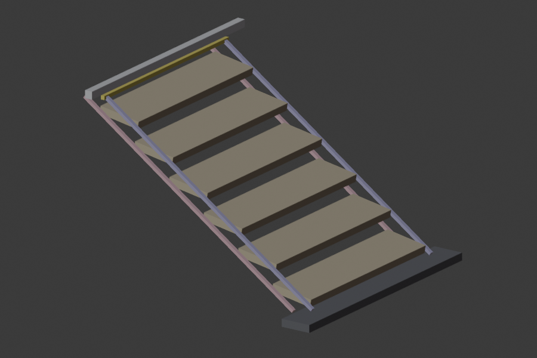
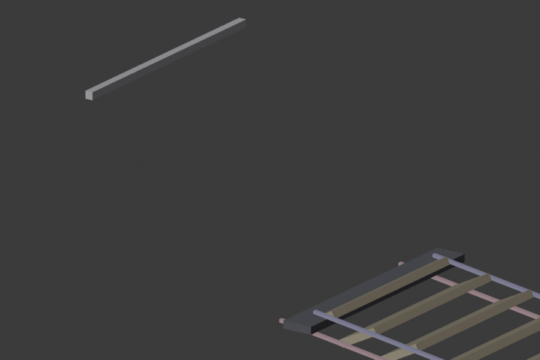

Every rigged state of the unit (single, end-to-end double, and side-by-side wide at catwalk 0°, standard 35° and steep 49.4°) was checked against the Event column of the load-compliance workbook. The checks used hand calculations, an independent finite-element model and Blender rigid-body physics. Every member section was measured from the CAD mesh.
No state carries the event crowd load of 7.5 kN/m². Once the handrails lock it, the unit's girder carries 0.66 (catwalk), 1.47 (standard) and 2.91 kN/m² (steep). The treads are fine; the thin guide bars, 25×10 posts, 5 mm hooks and free-standing stability are not. The all-aluminium basis is worse (86 fails).
With the upgrades below, every code check passes in all 11 states. The tightest is a steep-stair post under a 1.25 kN point load, at 0.975. One operating rule stays: the handrails must be inserted before anyone steps on. Without their lock pins the guide rails are a mechanism.
Material decision, 23 Sep 2026: everything aluminium. The part-by-part aluminium list below is the one to build from. This steel-basis table stays for reference.
| Member | As modelled | Required | Governs |
|---|---|---|---|
| Lower guide bars (both sides) | 20–25 × 25 sandwich, I = 7,562 mm⁴ | 25 × 45 solid flat, S355 (still fits the 25 mm channel) | Catwalk girder stress and L/100 deflection |
| Handrail posts | 25 × 10 flat bar, weak axis | SHS 40 × 40 × 4, S355 | 1.25 kN point / 3.0 kN/m crowd line |
| Top hooks (4 per unit) | 5 mm plate, 11.9 mm throat (2.04 kN each) | 10 mm plate, 16 mm throat (6.50 kN each) | Top reaction at ULS, 6.1 kN (double catwalk) |
| Free-standing catwalks | 127 kg self-weight only | 4 ground anchors per unit, ≥ 3.4 kN tension + 1.8 kN shear, or ≈ 1.4 t ballast | Crowd leaning on the guardrail (FoS 0.12 → 1.5) |
| End-to-end joints | Hooks + male connector only (0.32 kNm) | Support trestle under every joint, 24.4 kN ULS (double catwalk) | Unsupported hinged joint is a mechanism |
| Operating rule | — | Insert the handrails before loading | Bottom minis lock the parallelogram |
Superseded by the lightweight design below (69.4 kg). This list met the earlier load basis at 107 kg; it stays here for the record.
Structure in EN AW-6061-T6 (f0 240 MPa, γM1 1.1, E 69 GPa); treads stay EN AW-6082-T6. With the parts as drawn, the all-aluminium unit fails 86 of 173 code checks. The changes below were re-run through the full check suite for all 11 states. Aluminium is about a third as stiff as steel, so deflection rather than strength sets most sizes.
At catwalk the upper and lower bars nearly stack. Today there are 34.7 mm between the lower bar and the ground, 5.4 mm between the bars, and 19.5 mm under the tread ends. Deepening the lower bar alone needs 60 mm, which would put it about 5 mm below ground contact.
Splitting the growth works: the lower bar grows down to 50 mm and the upper bar grows up to 35 mm. The edges that carry the slots and pins don't move, so the rig kinematics stay the same. Adding 10 mm foot pads brings ground clearance back to 15.2 mm; the deck rises from 150 to 160 mm.
Other combinations that pass were checked too: 30/50 sits at 0.997 in deflection (too tight); 20/60 and 25/55 touch the ground.
| Part (rig name) | Qty / unit | Now | Change to | Governing check | Util now → after | Fabrication note |
|---|---|---|---|---|---|---|
| Make deeper or thicker | ||||||
| Lower guide bars MainRig_179 (R) · MainRig_037 (L) | 2 | R 20.45 deep × 25 sandwich (I 7,562 mm⁴); L 25 × 35 sandwich | Solid 6061-T6 flat, 50 mm deep; widths kept (R 25, L 35); extra depth grows downward | Girder stress & L/100 deflection, all locks (L4, L6) | 11.53 → 0.81 defl 7.27 → 0.91 | Keep every peg slot, pin hole and lock-mini hole at the same distance from the top (working) edge; axle end holes unchanged |
| Upper guide bars MainRig_118 (R) · MainRig_026 (L) | 2 | R 20 deep × 25 sandwich (I 9,878 mm⁴); L 25 × 35 sandwich | Solid 6061-T6 flat, 35 mm deep; widths kept; extra depth grows upward (R +15, L +10) | Share of girder bending; lets the lower bar stay at 50 mm | in girder 0.81 | Nosing-pin slots stay put relative to the bottom (working) edge; leaves 4.5 mm under the tread ends at catwalk |
| Handrail posts R 136 · 134 · 137 · 144 · 140 · 132 L 158 · 156 · 160 · 167 · 163 · 154 | 12 | 25 × 10 flat bar, 1000 long (W 418 mm³ weak axis) | SHS 50 × 50 × 4, 6061-T6, 1000 long (W 10,461 mm³) | 1.25 kN point at guardrail (L34); 3.0 kN/m crowd line (L33) | 23.90 → 0.96 line 20.74 → 0.89 | Re-detail the top pivot for the 50 mm tube (pivot pin through the SHS); top mini post becomes a spigot into the tube |
| Top hooks MainRig_000 · 001 (L) · 177 · 178 (R) | 4 | 5 mm plate, 11.9 mm throat (1.27 kN capacity in aluminium) | 10 mm plate, ≥ 22 mm throat — or twin 5 mm hooks, one on each skin, each ≥ 22 mm throat | Top reaction 6.05 kN ULS per hook (L61) | 4.74 → 0.94 | Twin option keeps the existing 5 mm skin planes; hook still wraps the 25.2 mm axle or bar |
| Add | ||||||
| Post base moment connection | 12 | Post held only by its bottom mini (25 × 10 pin, 0.09 kNm) | Base socket carrying 2.18 kNm per post: two fixings ≥ 100 mm apart, e.g. 2 × M12 A4-80 (21.8 kN each vs 32.4 kN), ≥ 5 mm aluminium where bolts bear | Fixed-base posts assumed in every barrier check | new | Nylon sleeves and washers between stainless and aluminium; the bottom mini stays as the lock pin |
| Foot pads under axle ends | 4 | Axle tubes stand directly on the ground | 10 mm pads (e.g. 60 × 60 aluminium, rubber-faced) | Catwalk ground clearance 5.2 → 15.2 mm | fit | Deck height at catwalk goes from 150 to 160 mm |
| Ground anchors or ballast free-standing catwalks | 4 | 107 kg self-weight only (FoS ≈ 0.1) | 4 anchors per unit, each ≥ 3.6 kN tension + 1.9 kN shear, or ≈ 1.5 t ballast per unit; side-by-side pair: ≥ 1.5 kN tension + 1.8 kN shear per anchor, or ≈ 0.6 t | Overturning FoS 1.5 (L40); sliding (L7) | new | Fix at the four axle feet |
| Joint trestle every end-to-end joint | 1 / joint | Hooks + male connector only | Support trestle rated ≥ 24.2 kN ULS (both sides together) under the joint | Unsupported hinged joint is a mechanism | new | Seat it under the shared axle line |
| Keep as drawn (passes in aluminium) | ||||||
| Treads | 6 | 280 × 50 extrusion, 6082-T6 | 7.5 kN/m², 3 kN point, deflection | 0.39 | No change | |
| Axles 006 · 010 | 2 | 25.24 × 2.74 tube, now 6061-T6 | Shear at supports | 0.61 | No change | |
| Bottom minis (lock pins) | 12 | 25 × 10 × 150, now 6061-T6 | Lock force up to 8.7 kN: shear / bearing on 2 × 5 mm skins | 0.28 | No change | |
| Guardrail and cyan handrail | 2 + 2 | 25 × 25 hollow / solid | Bending between posts | 0.31 | No change | |
| Geometry to settle against your compliance sheet | ||||||
| Steep first rise | — | 211 mm vs 232 mm for the other rises | Rise uniformity ± 5 mm (G13) | 21 mm off | Raise the steep base 21 mm, or re-set tread 0 | |
Source: v2/loadtest/upgrade_spec_alu.py → upgrade_spec_alu.json (sizing + full re-run); fit_search_alu.py (bar depth / fit options). Util = demand ÷ capacity at ULS; deflection at SLS.
The target was under 70 kg per unit while meeting the updated events sheet. Structure is EN AW-6082-T6, the alloy the sheet names (row R163). Nothing in the Blender model has been changed; this is the specification to build or re-model from.
Several values in the updated sheet are stricter than those the verdict above was tested against. Everything in this section uses the new values.
| Item | Tested before | Aug-2026 events sheet | What it drives |
|---|---|---|---|
| Tread point load | 3.0 kN | 4.0 kN on 200×200 (R114, EN 1991-1-1 Cat C) | Tread strength |
| Deflection | L/100 ≤ 25 mm | L/250 under crowd UDL + < 10 mm under one person (R115); L/100 kept as the floor | Girder and tread stiffness |
| Post point load | 1.25 kN | 1.5 kN (R179, EN 13374:2025) | Post size and base socket |
| Top-rail vertical load | — | 1.0 kN/m (R178) | Guardrail in-plane bending |
| Crowd sway | 2.5 % | 10 % of vertical imposed (R176) | 1.4 kN per stair into base + hooks |
| Dynamics | 5 Hz trigger | f1 ≥ 6 Hz where rhythmic movement is credible (R177) | Stair f1 46 Hz |
| Pattern loading | full UDL only | Asymmetric / half-span cases required (R180) | Girder checked both halves |
| Barrier line load | 3.0 kN/m | 3.0–5.0 kN/m, C5 recommended 3.0 (R142) | 3.0 used; 5.0 needs larger posts |
| Aluminium | 6061-T6 | EN AW-6082-T6 / 6063-T6 (R163) | 6082-T6 throughout |
| Row | Requirement | As drawn | Verdict | Change |
|---|---|---|---|---|
| R9 | Stair pitch ≤ 35° | 35.0° / 49.4° | standard, at limit steep | Steep becomes crew-only step-ladder mode (EN 131), not a public stair |
| R4 R5 | Going ≥ 250, riser ≤ 200 (170 rec), riser ≤ going × tan 35° | 250 / 175 · steep 199 / 232 | standard, at limit steep | Standard sits exactly on the limit; hold ±1 mm in fabrication |
| R8 | 2h + g 540–660 | 600 / 663 | standard steep | — |
| R12 | Uniform risers | steep first rise 211 vs 232 | steep | Crew-only mode; raise steep base 21 mm if it must be uniform |
| R7 | Open-riser gap ≤ 120 max / 100 rec | 125 mm | fail | 35 mm nosing lip on each tread → 100 mm |
| R48 | Deck gap ≤ 25 (catwalk) | 25.2 mm | fail | Tread depth 280 → 285 mm → 20.2 mm |
| R65 R68 | No gap > 470 mm in side protection | ≈ 1,000 mm tread to handrail | fail | Intermediate rail at 575 mm (also the ~600 mm child rail, R70) |
| R66 | Toe board 150 mm (event) | none | fail | 150 mm toe board both sides |
| R19 | Handrail 300 mm past top and bottom nosing | ≈ 80 mm | fail | Stair handrail variant extended, returned ends |
| R64 | Grip 25–50 mm (40 target) | 25×25 square bars | range | Round CHS: handrail 48.3, guardrail 40 |
| R103 | Module join gap ≤ 25, lip ≤ 4 | wide 35 mm · double 19 mm | wide double | Flush 60 × 3 cover strip on wide joins |
| R18 R109 | Centre handrail if > 28° and > 1.8 m wide | wide stair 2.54 m at 35° | with rule | Wide stairs keep both inner handrails; mini-only for wide catwalks |
| R3 | Clear width 1,100 (industry anchor, flow calc) | 1,023 between handrails | single unit | Main public routes use the wide pair, or justify by EN 13200-1 flow calc |
| R104 | Positive, captive locking | loose lock pins | fail | Captive pins (lanyard + spring detent) |
| R16 R17 | Slip PTV ≥ 40 wet; 55 mm contrasting nosings | not specified | open | Serrated top + test; anodised contrast nosing insert |
| R63 R106 R54 | Rail ≥ 1.1 m; posts ≤ 2.5 m; height:base ≤ 3:1 | 1,127 · 305 · 0.7:1 | pass | — |
No, not at this span. The tread spans 1.24 m between the guide rails, and the new 4 kN point load on a 200 mm patch is carried only by the grating bars under the foot. The lightest bar grating that passes weighs 10.97 kg, more than today’s tread. A hollow extruded plank uses its full width and its two skins, so it is much stiffer per kilogram.
| Tread option (6082-T6) | Governing util | Mass each | Riser gap | Deck gap |
|---|---|---|---|---|
| Current extrusion 280 × 50 (no lip) | 0.52 | 7.09 kg | 125 | 25.2 |
| Bar grating 45 × 3 @ 22, 30 mm lip | 1.40 | 7.87 kg | 100 | 20.2 |
| Bar grating 50 × 3 @ 25, 25 mm lip | 1.16 | 7.63 kg | 100 | 20.2 |
| Bar grating 50 × 4 @ 22, 25 mm lip (lightest passing grating) | 0.83 | 10.97 kg | 100 | 20.2 |
| Hollow plank 285 × 40, 2.0 mm skins, 5 webs, 35 mm lip | 0.78 | 4.94 kg | 100 | 20.2 |
| Hollow plank 285 × 40, 1.8 mm skins, 5 webs, 35 mm lip (recommended) | 0.83 | 4.57 kg | 100 | 20.2 |
| Hollow plank 285 × 40, 1.5 mm skins (extruder to confirm) | 0.93 | 4.01 kg | 100 | 20.2 |
Governing check for every option is the 4 kN point load at mid-span (ULS). Slip resistance comes from a serrated top skin with drainage slots, so the plank keeps grating-like grip and drainage. 6005A-T6 extrudes more easily but is weaker: 2.0 mm walls pass (0.94), 1.8 mm do not (1.01).
Guardrail (magenta), 1.1 m: yes, lighter. It is the rail the crowd leans on, so it takes the 3.0 kN/m line load and 1.5 kN point loads. But with posts clamped to it, a round CHS 40×2 works at 0.51 utilisation. That replaces the 25×25 hollow bar and meets the 40 mm grip target.
Handrail (cyan), 1.0 m: lighter than today’s solid 25×25 bar, but not thin. The sheet adds a 300 mm extension past the top and bottom nosings, and that extension is a cantilever beyond the end post. CHS 48.3×3 carries a 1.25 kN point load at its tip (0.94). The catwalk handrail variant has no extension and could drop to CHS 40×2.
| Part (rig name) | Qty / unit | Now | Change to | Governing check | Util | Mass |
|---|---|---|---|---|---|---|
| Replace or resize | ||||||
| Treads MainRig_061 · 079 · 096 · 019 · 030 · 042 | 6 | 280 × 50 extrusion, open riser 125 mm, deck gap 25.2 mm | 285 × 40 hollow plank, 6082-T6: 1.8 mm skins, 5 × 1.5 mm webs, integral 35 × 2 nosing lip; serrated top with drainage slots, 55 mm contrasting nosing insert | 4 kN point (R114); L/250 (R115) | 0.83 | 4.57 kg each |
| Lower guide bars MainRig_179 (R) · 037 (L) | 2 | 20–25 mm deep sandwich plates | RHS 25×45×3 (R), 35×45×3 (L); grows down 24.5 mm, working edge and all slots unchanged | Girder stress, half-span pattern; L/250 | 0.81 defl 0.49 | 7.12 kg all 4 bars |
| Upper guide bars MainRig_118 (R) · 026 (L) | 2 | 20–25 mm deep sandwich plates | RHS 25×25×2.5 (R), 35×25×2.5 (L); grows up 5 mm | Share of girder bending | 0.81 | |
| Handrail posts keep at treads 0, 2, 5 each side | 6 (was 12) | 25 × 10 flat bar at every tread | SHS 60×60×4, 1,000 long, at treads 0, 2 and 5 only; the other 6 posts are removed | 1.5 kN post point (R179); 3.0 kN/m line (R142) | 0.93 | 14.52 kg |
| Guardrail MainRig_125 · 145 | 2 | 25×25 hollow bar | CHS 40×2, clamped moment-rigid to each post | Line + point + 1.0 kN/m vertical | 0.51 | 2.23 kg |
| Handrail MainRig_127 · 149 | 2 | 25×25 solid bar | CHS 48.3×3; stair variant extended 300 mm past both nosings, returned ends | 1.25 kN at extension tip (R19, R143) | 0.94 | 6.01 kg |
| Top hooks MainRig_000 · 001 · 177 · 178 | 4 | 5 mm plate, 11.9 mm throat | 10 mm plate, ≥ 22 mm throat, or twin 5 mm hooks (one on each skin) | Top reaction ≈ 6 kN ULS | < 0.95 | 0.32 kg |
| Lock pins | 12 | Loose bottom minis at every tread | 6 post minis stay; 6 Ø12 captive pins at the treads without posts (lanyard + spring detent) | Lock force 8.7 kN (R104 captive) | 0.59 | 0.80 kg |
| Add | ||||||
| Intermediate rail | 2 | — | CHS 30×2 at 575 mm above the pitch line (gaps 425 / 425 mm; doubles as the ~600 mm child rail) | R65/R68 ≤ 470 gap; 1.25 kN point | 0.30 | 1.64 kg |
| Toe boards | 2 | — | 150 × 25 × 1.5 channel, both sides | R66 150 mm; 1.25 kN point | 0.45 | 2.80 kg |
| Post base moment sockets | 6 | — | Socket carrying 3.44 kNm per post: 2 × M14 A4-80 ≥ 100 mm apart (or 2 × M12 ≥ 110 mm), ≥ 5 mm aluminium in bearing, nylon isolation | Post base fixity | new | 1.80 kg |
| Catwalk mid-feet | 2 | — | 10 mm rubber-faced pad under each lower bar at mid-span: at catwalk the girder becomes two spans on the ground; at stair angles it lifts clear | Catwalk L/250 (0.57) | 0.53 | 0.48 kg |
| Foot pads under axle ends | 4 | — | 10 mm pads (lower bar leaves 10 mm ground clearance at catwalk; pads make it 20) | Fit | fit | |
| Wide-join cover strip | 1 / pair | — | 60 × 3 flush strip over the 35 mm deck gap between side-by-side units, lip ≤ 4 mm | R103 | fit | accessory |
| Anchors or ballast free-standing catwalks | 4 | — | ≥ 3.7 kN tension + 1.9 kN shear per anchor, or ≈ 1.5 t ballast per unit | EQU FoS 1.5 (R149) | spec | site kit |
| Joint trestle double staircase / double steep | 1 / joint | — | Trestle ≥ 24 kN ULS under the elevated joint. Double catwalk at ground level needs none: the shared axle sits on its feet | Unsupported joint = mechanism | spec | site kit |
| Keep | ||||||
| Axles 006 · 010 | 2 | 25.2 × 2.7 tube, in 6082-T6 | Support shear | ≈ 0.6 | 1.36 kg | |
| Pivot heads, clamps, bolts | — | 6 pivot heads, 18 rail clamps, brackets and fasteners | — | — | 2.68 kg | |
| Configuration rules | ||||||
| Steep (49.4°): crew-only step-ladder mode to EN 131 Professional; signed “not for public use” (pitch, riser, going and uniformity fail EN 13200). Wide staircase: both inner handrails fitted (R109 centre-rail rule); the mini-handrail-only option is for wide catwalks. Catwalks: ground-level use with mid-feet; an elevated, bridging catwalk needs its own check. Always: handrails and lock pins in before anyone steps on. | ||||||
| Treads 6 × 4.57 | 27.42 | Posts 6 × SHS 60×60×4 | 14.52 |
| Guide bars (4, RHS) | 7.12 | Handrails 2 × CHS 48.3×3 | 6.01 |
| Toe boards 2× | 2.80 | Guardrails 2 × CHS 40×2 | 2.23 |
| Post base sockets 6× | 1.80 | Intermediate rails 2 × CHS 30×2 | 1.64 |
| Axles 2× | 1.36 | Brackets, bolts, spacers | 1.20 |
| Rail clamps 18× | 1.08 | Lock pins 12× | 0.80 |
| Hooks + male connectors | 0.52 | Feet + mid-feet | 0.48 |
| Pivot heads 6× | 0.40 | Total | 69.4 kg |
Source: v2/loadtest/lightweight_events_2026.py → lightweight_events_2026.json, lightweight_final.json. Sheet copy: v2/spec/sheet_2026-09-23_events.txt (R# = row in that file).
Governing utilisation in each check group (demand ÷ capacity; above 1.00 fails). Hover a cell for the governing check.
Maximum characteristic UDL on the girder in its realistic locked state (FE), basis A, against the event band of 5.0–7.5 kN/m².
Each side is a parallelogram: an upper and a lower guide bar, joined by the six treads. Each tread is pinned to the lower bar at its rear and to the upper bar at its nosing. Fitting the measured bar spacing at the three locks gives one constant link of (199.9, 24.6) mm. That fit predicts the third lock to 0.0 mm.
Pinned links can't carry shear, so on their own the two bars fold flat under load. Blender physics shows it: the unlocked girder racks 401 mm. Each post's bottom mini drops through the tread end into the lower bar and fixes the tread to it. That turns the girder into a rigid frame (Vierendeel) whose depth is the bar separation: 25 mm at catwalk, 136 at standard, 169 at steep.
That is why the catwalk is weakest: the bars nearly stack, so the frame has almost no depth.
The hand calculations follow the same rigour as v2/spec/params.py. The FE model is a numpy direct-stiffness frame for the girders, plus an out-of-plane grillage for the barriers. The Blender rigid-body runs happen in a separate headless process on proxies of the measured members.
| Quantity | Hand calc | FE | Blender physics | Agreement |
|---|---|---|---|---|
| Lower-bar moment, catwalk / standard / steep (kNm, ULS) | 3.143 / 2.137 / 1.371 | 3.129 / 2.125 / 1.361 | — | ≤ 0.7 % |
| Top reaction per side, catwalk / standard / steep (N, char.) | 3,549 / 2,939 / 2,338 | — | 3,559 / 2,947 / 2,343 | ≤ 0.3 % |
| Catwalk slides at (N, μ = 0.30) | 374 | — | 376 | 0.5 % |
| Catwalk tips at (N, push at guardrail height) | 645 | — | 646 | 0.2 % |
| Girder without the handrail lock | mechanism | singular stiffness | racks 401 mm | all agree |
| Top hooks at ULS, as drawn / upgraded | util 2.09 / 0.68 | — | drops off bar / holds | all agree |
| Blender cloth, calibrated girder ribbon | Rejected as a quantitative method. Blender cloth is a membrane solver: pinned ends make it a cable, and a collision-pad roller was numerically unstable (ULS/SLS sag ratio 6.1 against 1.48 linear). Qualitative only: an unsupported joint sags 2.5× more (95.9 vs 38.2 mm) even with both ends restrained. | not used | ||


One rig drives every state. The treads match the pre-built originals at all three locks, the left side is restored to its own male-plate geometry, the handrail variants come straight from the catwalk, standard and steep originals, and a second unit hooks on end-to-end or pins on side-by-side. The Staircase panel in Blender has a button for each state, Remove/Insert Handrails, and a Storyline toggle.
| Hand calcs + FE (runnable) | v2/loadtest/loadtest_latest.py |
| Blender physics / cloth (headless) | v2/loadtest/blender_physics.py · blender_cloth.py |
| Every check, both bases + upgraded | v2/loadtest/results_handcalc_fe.json · .csv |
| Physics results | v2/loadtest/physics/results_physics.json · results_cloth.json |
| Rig, UI, storyline | v2/out/Latest 21-09-2026/STEP LADDER RIGGED2.blend |